El líder del PSOE se distancia del duro discurso de Aznar contra el PNV.
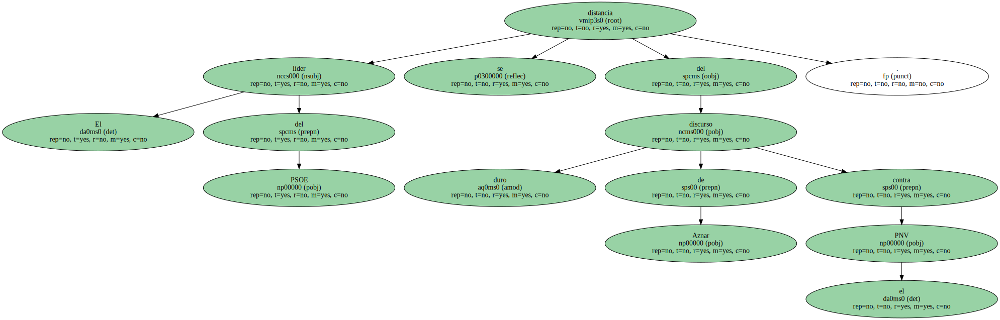Aboga por tejer una unidad sólida y de fondo de todos los demócratas.
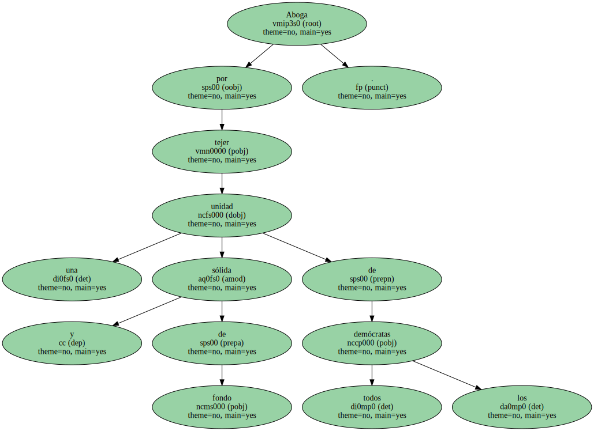El Gobierno vasco replica al presidente que su mensaje busca el enfrentamiento.
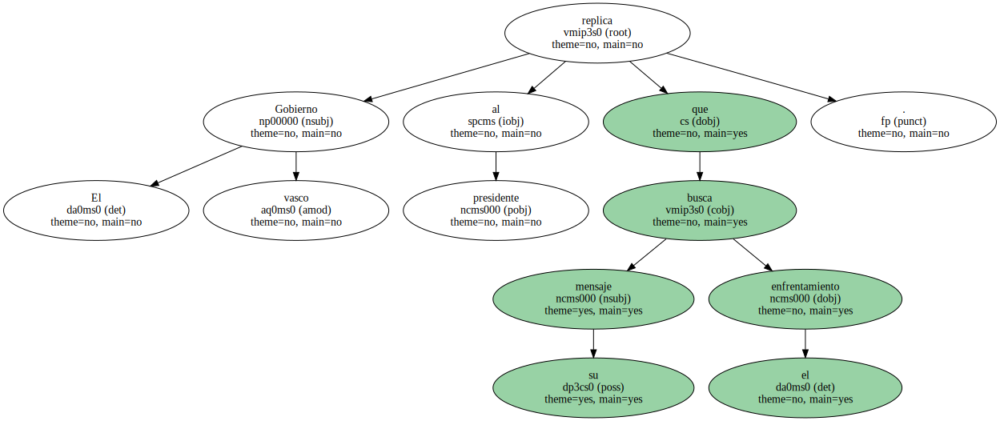El PSOE se distanció ayer del implacable discurso de José María Aznar contra el nacionalismo democrático vasco.
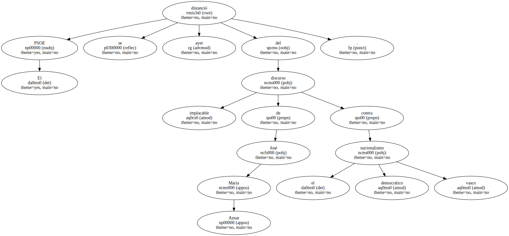El secretario general de los socialistas , José Luis Rodríguez Zapatero , aunque fiel a su consigna de no arremeter contra el PP en materia antiterrorista , sí se permitió hacer una velada crítica al tremendismo del presidente del Gobierno al reclamarle que mantenga " la esperanza de la sociedad española sobre un horizonte de paz ".
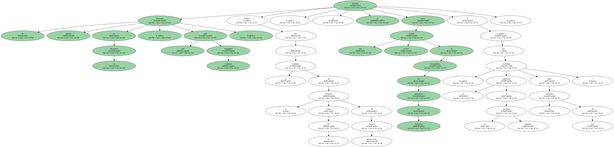Los socialistas , según se desprende de las palabras de su secretario general , juzgan que dar portazo al PNV , como hace Aznar , puede no ser el mejor modo de recomponer la unidad democrática.
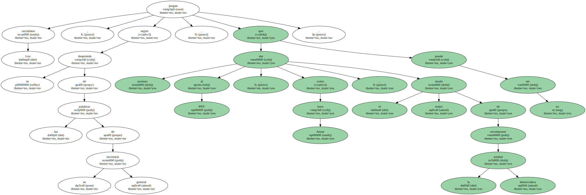Desde León , Rodríguez Zapatero apostó por una " unidad de fondo sólidamente arraigada " entre todos los partidos democráticos para compartir " día a día los objetivos y las estrategias ".
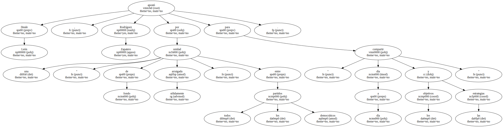Por ello , pidió que el portavoz del PNV , Iñaki Anasagasti , y el ministro del Interior , Jaime Mayor Oreja , aprovechen el encuentro de mañana y se " digan las cosas claras ".
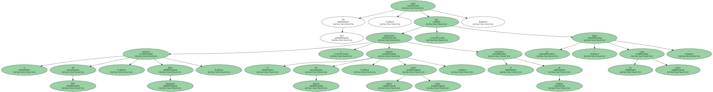Insistió en que el Gobierno tiene " la lealtad y cooperación permanente " del PSOE a la hora de definir una política de Estado frente al terrorismo.

El líder de los socialistas vascos , Nicolás Redondo , fue más lejos al precisar que esa actitud , " que no tuvo el PP en su día " , es la que les diferencia de los conservadores.
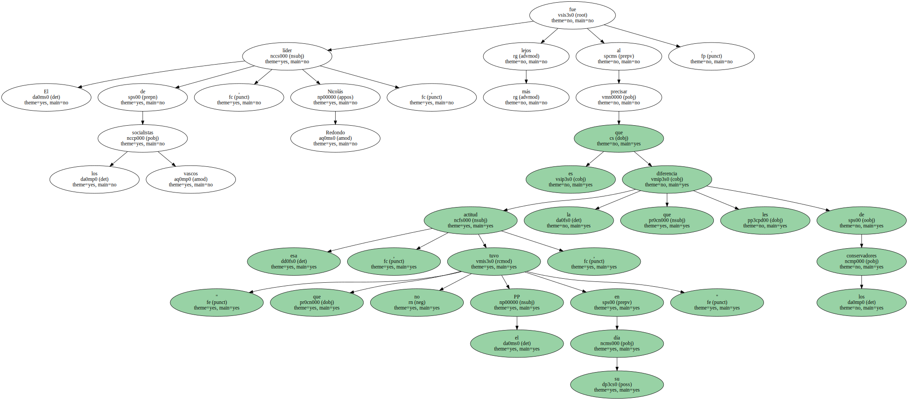Sin embargo , desde el compromiso y la voluntad de trabajar juntos , espetó al presidente que es la hora de que " gobierne " y " optimice " la eficacia policial.
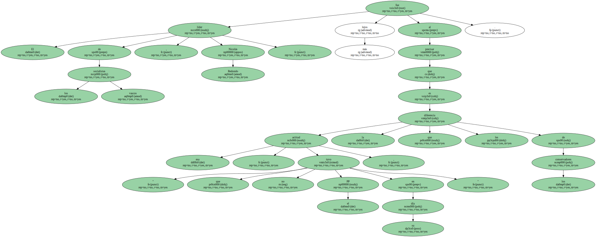Rodríguez Zapatero se mostró muy cuidadoso a la hora de referirse a Juan José Ibarretxe.

Anunció que trasladará al lehendakari la posición del PSOE y su " exigencia " de que " se garantice la seguridad y libertad de todos los ciudadanos " , pero evitó pronunciarse sobre el nuevo foro de partidos que Ibarretxe quiere impulsar.
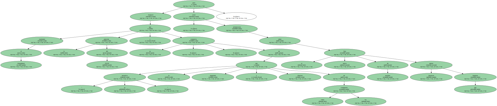Lo que sí reconoció es que la trayectoria del PNV durante los últimos meses " no aporta la confianza suficiente para compartir un proyecto en defensa de la paz ".
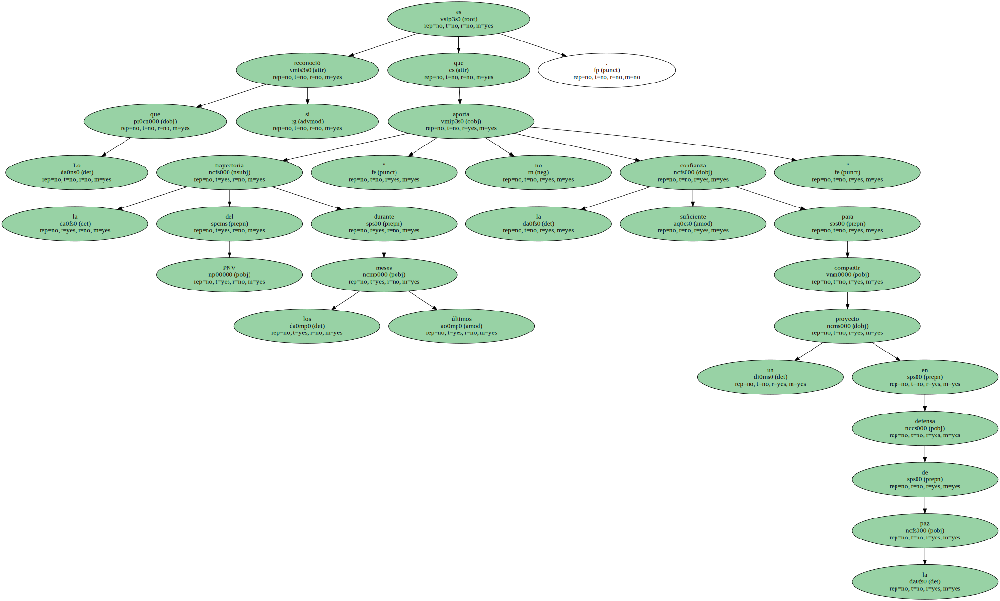Redondo fue mucho menos remilgado.
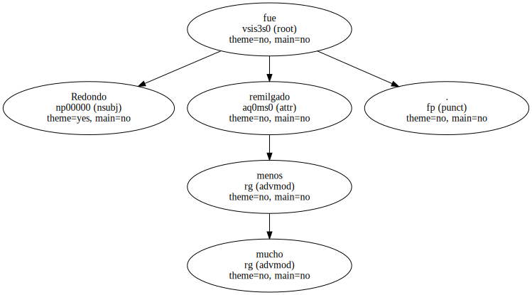El secretario general del PSE-EE replicó a Ibarretxe que el Pacto de Estella no está invalidado por la acción de ETA , sino que fue una " equivocación " desde el primer momento porque " no reconoció " la pluralidad vasca.
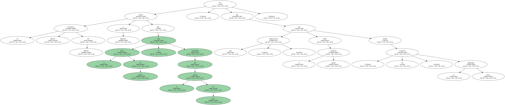Añadió también que el Ejecutivo de Vitoria es " débil , incapaz de liderar una situación sin precedentes y con el pecado original de haber sido votado por EH ".
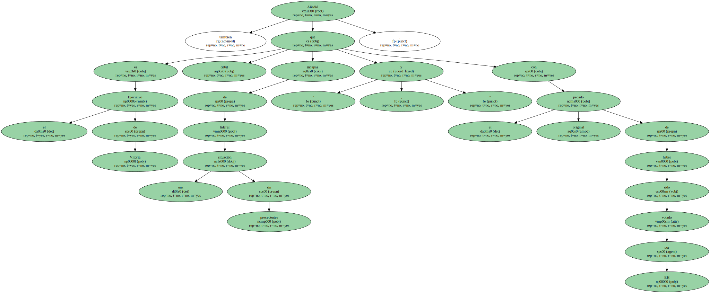El dirigente socialista vasco puso interés en recalcar que su partido " siempre tendrá la puerta abierta " al PNV para luchar contra ETA , pero enfatizó que esa unidad sólo será posible si los nacionalistas aceptan las reglas del juego democrático y convienen en que el Estatuto , " que han estado torpedeando " , es el instrumento más amplio de convivencia que jamás han tenido los vascos.
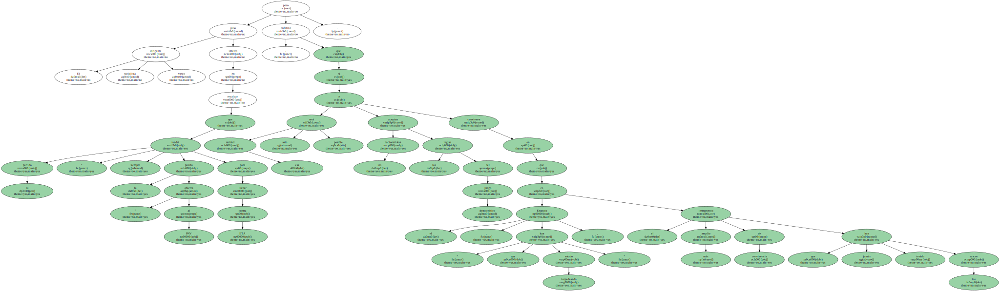Advirtió a sus antiguos socios de que si siguen por la senda de los últimos meses , dejarán de ser un partido necesario y se convertirán en un " lastre " para sí mismos y para la sociedad.
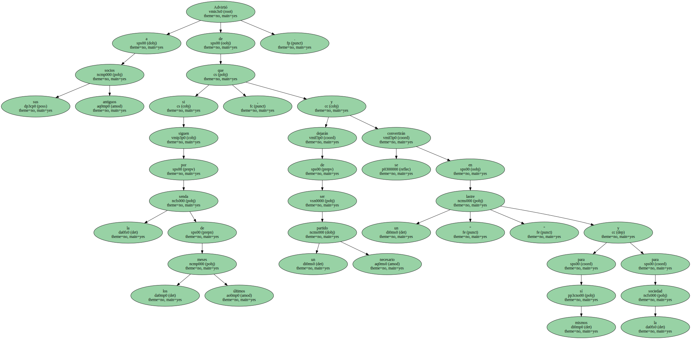En este sentido , avisó a Ibarretxe de que a su Gobierno el tiempo se le " acaba ".
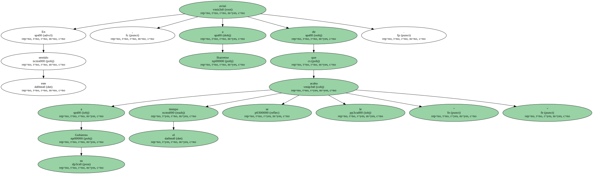El portavoz del Ejecutivo de Vitoria , Josu Jon Imaz , acusó a Aznar de lanzar un " mensaje basado en la confrontación y la ausencia de diálogo " , pero aseguró que PNV y EA acudirán a sus respectivas reuniones con Mayor Oreja dispuestos a buscar " espacios de entendimiento " , porque no desean potenciar " mensajes de crispación , fractura o división ".
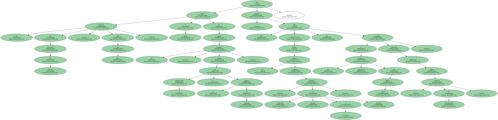